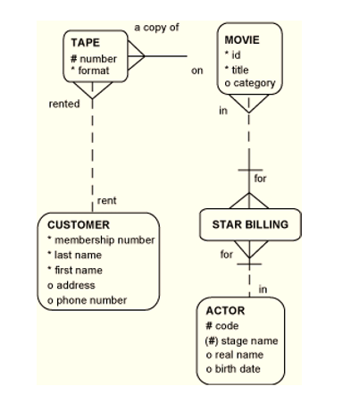

This lab will put into practice the identification of unique identifiers and the process of normalisation.
Draw the ER diagram for this scenario ( you may already have some of it worked out from a previous lab):
I’m the owner of a small movie hire store. We have over 3,000 DVDs that we need to keep track of.
Each of our DVDs has a disk number. For each movie, we need to know its title and category (e.g., comedy, suspense, drama, action, war, or sci-fi). Yes, we do have multiple copies of many of our movies. We give each movie a specific ID, and then we track which movie a disk contains. A disk may be either High Definition (HD) or BlueRay format. We always have at least one disk for each movie we track, and each disk is always a copy of a single, specific movie. Our disks are very big, although we don’t have any movies that require multiple disks.
We are frequently asked for movies starring specific actors. John Wayne and Kathe-rine Hepburn are always popular. So we’d like to keep track of the star actors appearing in each movie. Not all of our movies have star actors. Customers like to know each actor’s “real” birth name and date of birth. We track only actors who appear in the mov-ies in our inventory.
We have lots of customers. We only rent DVDs to people who have joined our DVD club. To belong to our club, they must have good credit. For each club member, we’d like to keep the first and last name, current phone number, and current address. And, of course, each club member has a membership number.
Then we need to keep track of what DVDs each customer currently has checked out. A customer may check out multiple DVDs at any given time. We just track current rent-als. We don’t keep track of any rental histories.
Resolve any M:M relationships and identify UIDs for all entities.
Check to see if each ERD is in "1NF", if not make the necessary changes to correct it.
A store can be located in several shopping mals, and a shopping mall has many stores. To locate a particular store in a specific neighborhood, you need the name and address of the nearby shopping mall, plus the name of the store. Does this ERD follow the rules of Second Normal Form? If you spot a violation correct it.
A color scheme for a car includes specifications for paint color for the body and the interior colors and materials. For example: The “Desert” color scheme includes silver paint and gray leather interior; the “Sunburst” color scheme includes gold paint and cream leather interior. Does the model below follow the rules of Third Normal Form? If you spot a violation, correct it.
Assume the following business rules:
An athlete employes one agent. An agent may work for one or more athletes. An athlete may play for one team. A team may have one or more players. Does this model contain transitive dependencies?
Check your movie database ERD to ensure it conforms to 1NF 2NF 3NF.
For the rest of the lab please make a start on your ERD for the continuous assesment.
